Proxmox VE client for Android
PXMXSHOWCASE
It talks straight to your server, nothing in between.
GPL-3.0 ANDROID 8+ NO CLOUD DEMO MODE
What you're looking at below is the app itself, in demo mode. Pick an option in the bar above and the page jumps to it.
01Cluster home
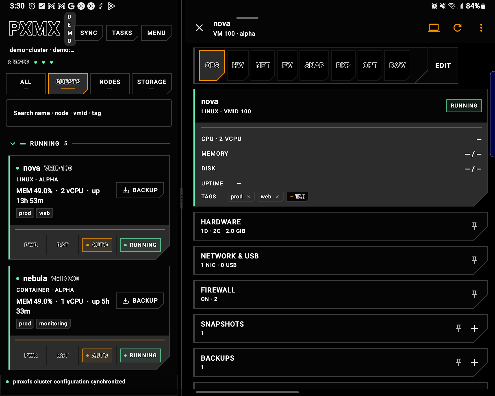
On a foldable, the guest list and the selected guest stay on screen together. Phone-sized layouts use the same cards, one pane at a time.
- SERVER lamps sit above the tabs, one per node
- Guest names sit next to a status lamp, in readable type
- PWR, RST, AUTO, and BACKUP stay on the card
- The latest cluster line stays pinned at the bottom
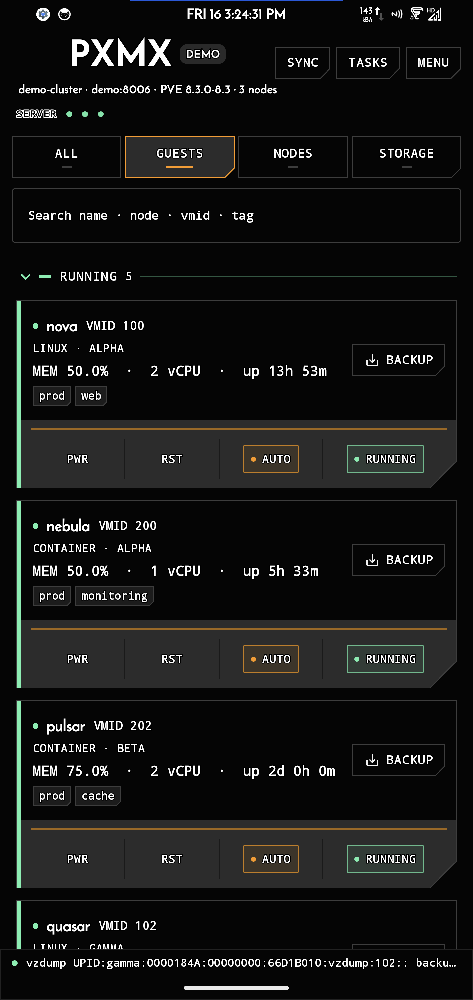
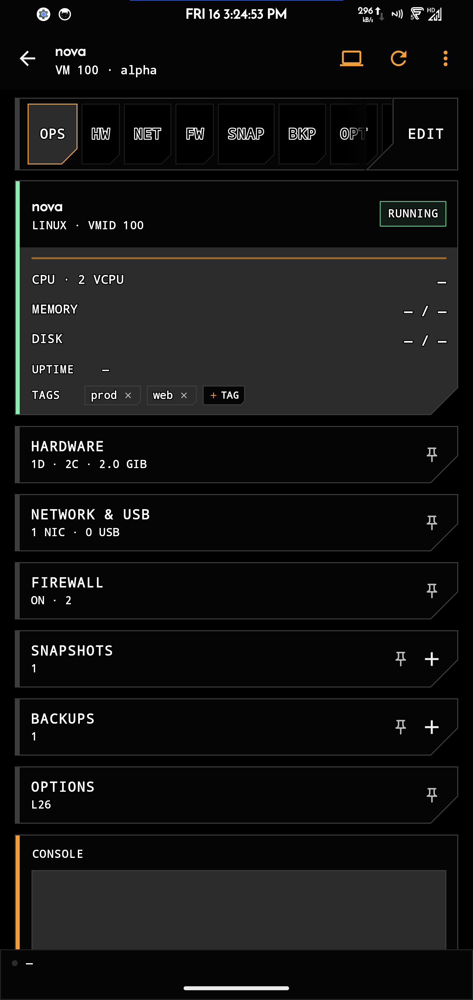
Phone home is the operator deck. Tap a guest and the OPS board opens.
- Tabs switch between guests, nodes, and storage
- Search matches name, node, VMID, or tag
- DEMO stays on the title while the sample cluster is loaded
02Guest board

OPS is the home plate. A mill-cut bezel jumps to hardware, network, firewall, snapshots, backups, options, and raw config. EDIT stays pinned on the right.
- Selected stamps expand to the full word
- Power lives in the overflow menu; the list card keeps PWR and RST
- Console opens from the header, in the app
03Deploy from template
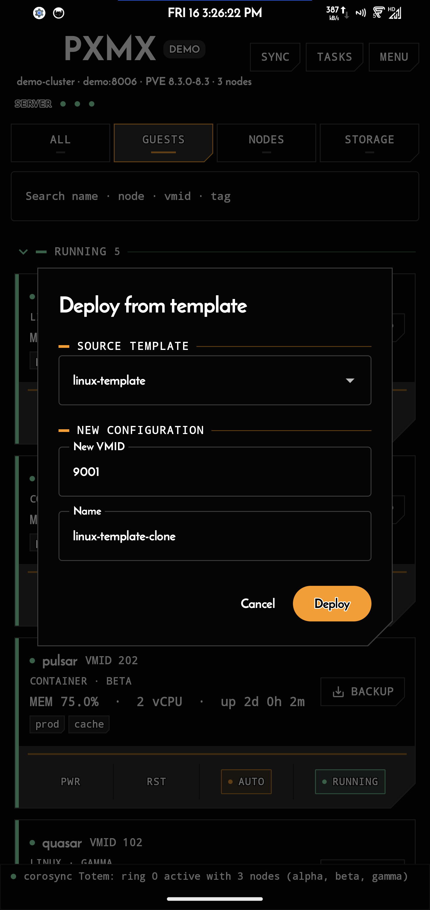
Clone a template into a new VM without a desktop. The dialog suggests the next free VMID and a name, and errors show right where they happen.
- Template picker across the whole cluster
- Suggested VMID and name, edit in place
- New VM lands on the cluster ready to start
04Tasks & updates
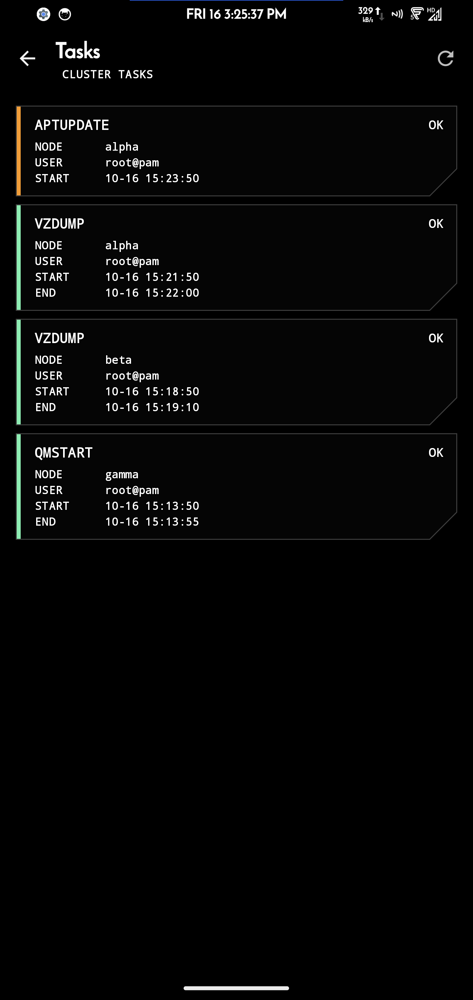
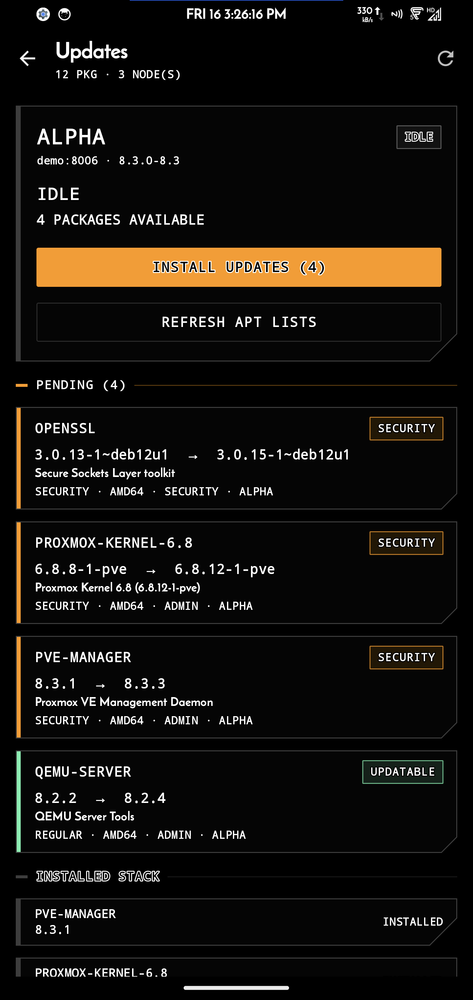
Two views of work on the cluster: the task log, and package updates waiting on a node.
- Backups and starts finish with OK statuses
- Each task shows its user and start time
- Updates walk through fetch, install, and cleanup with live progress
- On Proxmox VE 9, remote install is walked to the node shell when the API requires it
05Appearance
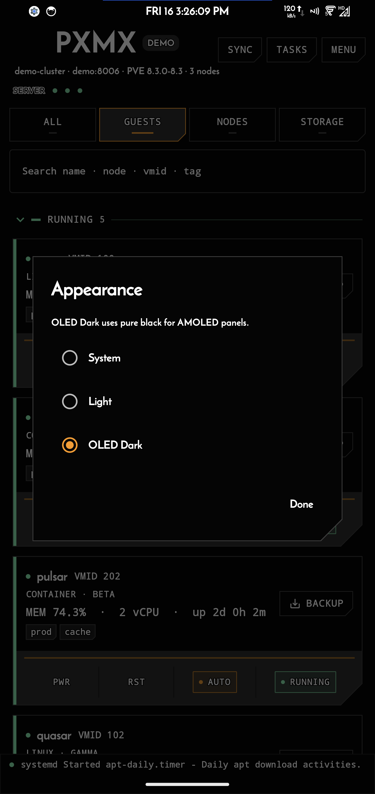
OLED Dark is the default. Light and follow-system are built in. The setting is for the app, not per server.
- Three modes: OLED Dark, Light, System
- OLED Dark turns unlit pixels fully off
- Lists glow orange when you reach the end
06Storage & nodes
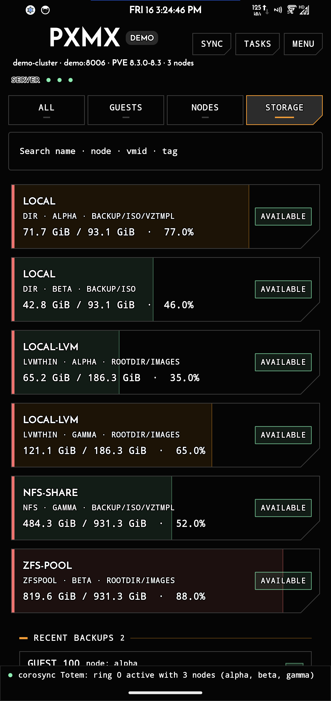
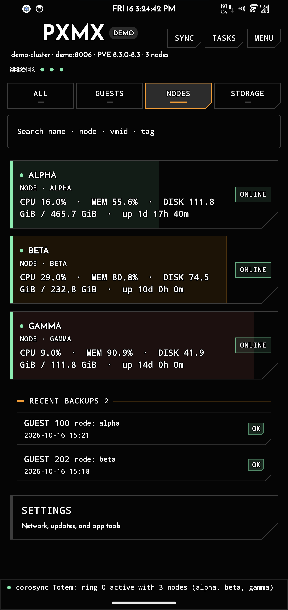
Usage as fills: green, amber, red at a glance. Storage per pool, memory per node.
- Each pool shows used and total, with a fill to match
- On a store that accepts ISO images, upload from the system file picker
- Node cards show memory, CPU, and uptime
- Settings is the list footer, not buried in MENU
07Network discovery
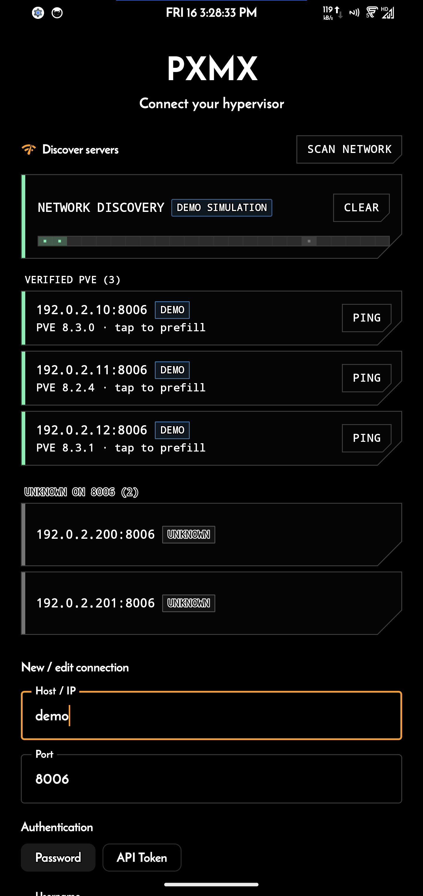
Scan the local network from login. A sweep runs while it works. Verified hosts prefill the form on tap. Ping is a separate fill on the row.
- Verified, unknown, and needs-login stay distinct
- Demo scan is marked DEMO SIMULATION and uses documentation-range addresses
- Scan never auto-pings
08No server handy
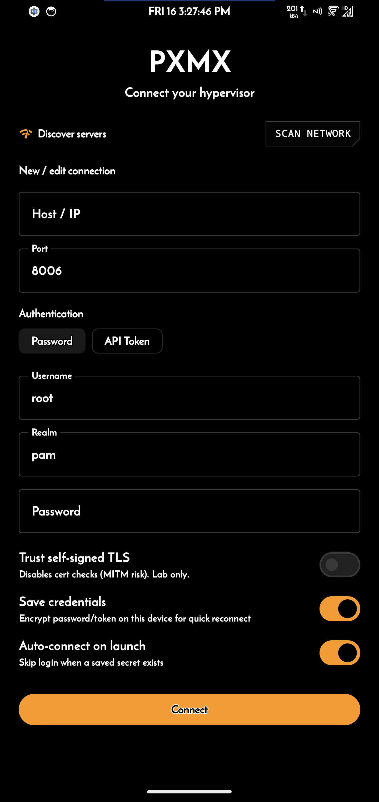
First run opens this login screen. Five taps on the PXMX title load a sample cluster. Nothing is saved against your real servers while demo is active.
Demo mode — for people who just want to look at the app without connecting it to anything. The sample cluster is labeled DEMO. A demo scan is labeled DEMO SIMULATION. Your own profiles stay stored and come back when you leave demo.
09What it does
LoginPassword, API token, or 2FA. Self-signed certs are opt-in and pinned. Saved profiles keep the host and username, never the secret. Hosts from the same cluster group together.
ScanLocal-network discovery with a sweep. Tap a verified host to prefill. Ping is a fill on the row, never automatic.
ClusterGuests, nodes, and storage on one screen. SERVER lamps for each node. Guest names sit next to a status lamp.
PowerStart, stop, reboot, shut down. Tap or long-press. Suspend, resume, reset, and auto-start on boot included.
BoardOPS plus a mill-cut bezel for hardware, network, firewall, snapshots, backups, options, and raw.
DeployClone from a template in one dialog. Errors show right there.
BackupTo the server, or straight to your phone.
ISOUpload from the system file picker onto a store that allows it. No all-files grant.
ConsolenoVNC for guests, xterm.js for the node shell, TLS through the app pin.
UpdatesRefresh lists and install with live progress. Proxmox VE 9 walks you to the node shell when remote install is blocked.
LogsLatest cluster line pinned to the bottom of home. Tap for the full log.
ThemesOLED Dark, Light, and System. Lists glow orange at the end of a list.